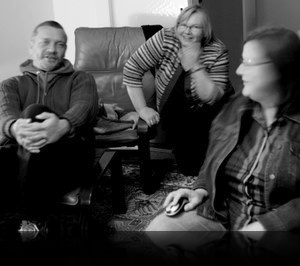

News: Disparate Beings screening 27-29 February 2012.
The moonstuart collaboration/partnership (Brenda Moon, Eleanor Gates-Stuart & Barry Moon) grew out of mutual research interests at the Centre for the Public Awareness of Science, ANU, and the New College of Interdisciplinary Arts & Sciences at Arizona State University.
The group are interested in engaging participants/viewers in a broad range of digitally mediated experiences.
Contact: brenda@moon.au
Dr Eleanor Gates-Stuart is a new media artist with a special interest in interdisciplinary practice across arts, technology, science and media. She completed her PhD at CPAS, ANU in 2015 and was researcher in residence with NICTA (08 -11). www.eleanorgatestuart.com
Dr Barry Moon is a composer, sound/video artist, and performer. He is Assistant Professor in the New College of Interdisciplinary Arts & Sciences at Arizona State University. www.barrymoon.com
Brenda Moon has a background in science and information technology. She is interested in exploring the use of interactive multimedia in the communication of science. She is a PhD Candidate at CPAS, ANU. moon.au